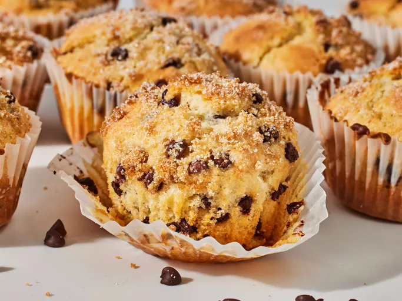

Chocolate Chip Muffins

Description
These chocolate chip muffins are quick and easy to make and simply delicious! The tops of these muffins have a crunchy sugar crust for a lovely contrast of texture in each bite.
Ingredients
- 3/4 cup milk
- 1/2 cup vegerable oil
- 1 large egg
- 2 cups all-purpose flour
- 1/2 cup white sugar
- 2 teaspoons baking powder
- 1/2 teaspoon salt
- 3/4 cup mini semi-sweet chocolate chips
- 1 1/2 tablespoons white sugar
- 1 tablespoon brown sugar
Steps
- Gather all ingredients. Preheat the oven to 400 degrees F (200 degrees C). Grease a 12-cup muffin tin or line cups with paper liners.
- Combine milk, oil, and egg in a small bowl until well blended.
- Combine flour, 1/2 cup sugar, baking powder, and salt together in a large bowl, making a well in the center.
- Pour milk mixture into well and stir until batter is just combined; fold in chocolate chips.
- Spoon batter into the prepared muffin cups, filling each 2/3 full.
- Combine 1 1/2 tablespoons white sugar and 1 tablespoon brown sugar in a small bowl; sprinkle on tops of muffins.
- Bake in the preheated oven until tops spring back when lightly pressed, about 18 to 20 minutes
- Cool in the tin briefly, then transfer to a wire rack. Serve warm or cool completely.
© rhinzz